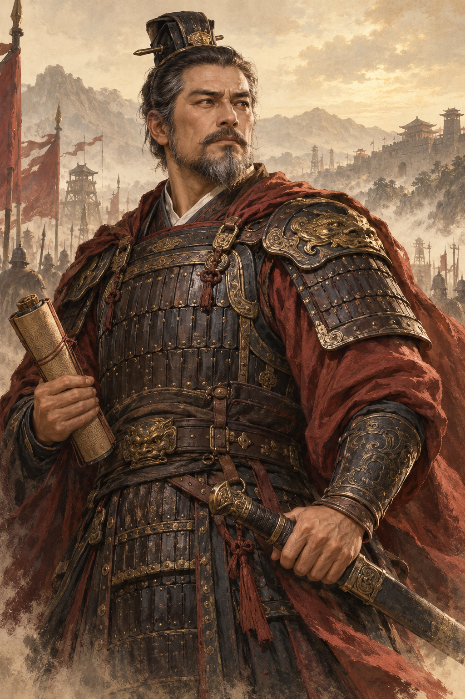
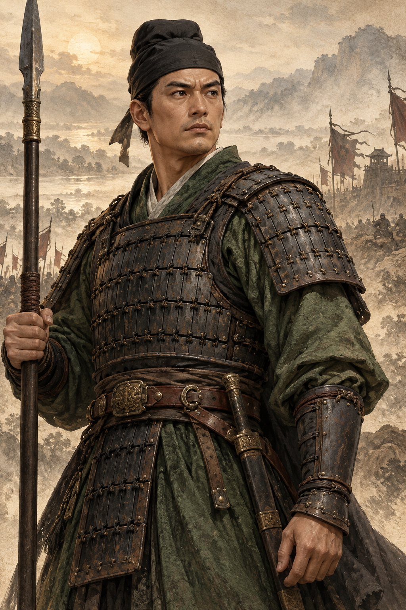
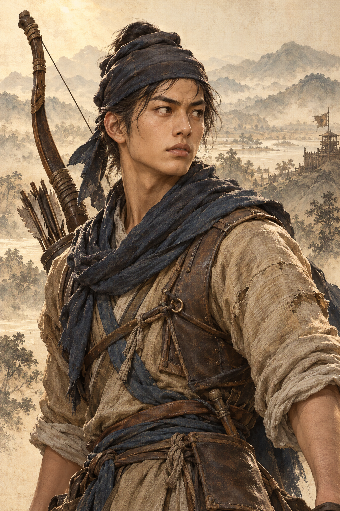

原图按 200×300 显示：第一阶段评审
只改变浏览器显示尺寸；原始PNG未改动。下方56×56头像用于检查统一裁切的缺陷，不代表正式头像。

皇甫嵩
冠 / 花白胡须 / 红披风 / 卷轴
统一头像裁切
56×56

汉军校尉
黑巾 / 绿衣 / 甲片 / 长兵器
统一头像裁切
56×56

汉军斥候
年轻面部 / 蓝巾 / 浅衣 / 弓箭
统一头像裁切
56×56
下一项验收：实际客户端的卡框、星级、阶数、姓名覆盖是否遮挡面部或关键道具。